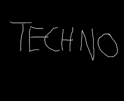

Rock zene
A rock egy könnyűzenei stílus, mely a második világháborút követő politikai feszültségek korában tört utat magának, egész kulturális forradalmat indítva. 1954. április 12-én Bill Haley a Rock Around the Clock című számának stílusa, megszólalása éles ellentétben állt a korra jellemző lágy, fülbemászó, érzelmes dallamok stílusával, amelynek olyan előadói voltak, mint például Frank Sinatra. A rockzene társadalmi hatásai közül a legkomolyabb, hogy megnövelte a szakadékot a háború után felnövekvő tinédzserek és szüleik között. Lehetőséget adott a fiatal generációnak a bennük lévő lázadó életérzés kifejezésére, hiszen ez a zene csak nekik szólt, az ő életérzésüket hirdette. A zenei megújulást követte az öltözködési stílus és a teljes viselkedéskultúra megváltozása. A rock futótűzként terjedt az Egyesült Államokban, majd Nagy-Britannia után egész Európában, végül az 1960-as évekre meghódította az egész világot.
Klaszikus zena
Bővebben: zenetörténet Esztétikai értelemben bármely, a legkülönbözőbb értelemben vett – társadalmi vagy szakmai közmegegyezés szerinti – magas kvalitással bíró zene. Ez értelemszerűen nem csak a komolyzenére vonatkozik, hiszen beszélünk „klasszikus dzsesszről”, a „rockzene klasszikusairól” és „klasszikus magyar népdalról”. Ilyen alkalmazásában tulajdonképpen nem zenei terminus, esztétikai normaként rendkívül széles körben használjuk: példaszerű, mintaszerű, a maga nemében tökéletes stb. (még csak nem is feltétlenül a művészetek körén belül). Legszűkebb értelmében a klasszikus zene – mint zenetörténeti korstílus – a bécsi klasszika szinonimája; a bécsi klasszikus zeneszerzők: Haydn, Mozart és a fiatal Beethoven (esetenként egyúttal az őket követő, kortárs kisebb mesterek) munkásságának elnevezése; illetve az a stíluskorszak, melyben e zeneszerzők tevékenykedtek: nagyjából az 1780-tól 1820-ig terjedő időszak. Hasonlóképpen a bécsi klasszika közvetlen előzményét gyakran preklasszikának nevezik. Közkeletű, de súlyos terminológiai tévedés a bécsi klasszikát „klasszicizmus” névvel illetni. A klasszicizmus törekvéseinek középpontjában a klasszikus ókor művészeti eszményeinek újjáélesztése áll, ezzel szemben Haydnt, Mozartot és Beethovent a zenetörténet-írás saját jogán tekinti klasszikusnak: elsőrangúnak, mértékadónak, példaértékűnek. Ezért ők nem klasszicisták, hanem a szó klasszikus értelmében klasszikusok.
Popzene
A 20. században folyamatos volt a fejlődés a hangrögzítés terén. A hanglemez, a fonográf megjelenése és elterjedése a rádió korszakában már a távol levő előadó zenéjének határokon túli terjesztését is lehetővé tette. A hanglemezek fejlődése lehetővé tette, hogy 3-4 perc helyett akár másfél órai zenei anyagot is rögzítsenek. A magnetofon volt az első eszköz, amely lehetővé tette a rádióban elhangzott zene másolását, a hanglemez megvásárlása nélkül (ezt a kazettás magnetofon még praktikusabbá tette). A televíziózás is segítette a zene terjedését. Mindez az 1950-es évek végére a zene globalizációjához vezetett, vagyis az újonnan alkotott zeneszámok szinte azonnal elérhetővé váltak a világ nagy részében. A 2005-ös alapítású YouTube videómegosztó webhely, és a 2006-os alapítású Spotify zene-streamelő szolgáltatás teljesen átalakította a zeneipart, mivel egyre gyakoribbá válik, hogy a zenei előadók már az új albumaik megjelenése előtt közvetlenül publikálják dalaikat ezeken a webhelyeken.
techno zene
A techno az elektronikus tánczene egyik fajtája, amely az 1980-as évek közepén-végén alakult ki az Egyesült Államokban, azon belül a michigani Detroitban. A techno szót zenei műfaj leírásaként hivatalosan 1988-ban használták először. Manapság sok techno stílus létezik, de a sok alstílus alapjának a Detroit techno tekinthető. 
Heavy metal
A heavy metal az 1980-as években vált igazán népszerűvé világszerte, amikor sok, ma már szélesebb körben elterjedt alműfaja először kifejlődött. A metal korábban ismert formáinál jóval agresszívebb és extrémebb variációk jobbára csak az underground közönség figyelmét keltették fel, de például a glam metal és kisebb mértékben a thrash metal is már komoly kereskedelmi sikereket arattak.
Magyarországon mindig is mostohán kezelték a műfajt, bár a nemzetközi trendeknek megfelelően, az 1970-es évektől már itthon is tömegeket vonzottak a külföldi példaképek követői, elsősorban a P. Mobil. Az állampárti kultúrpolitika miatt az első magyar heavy metal lemezek elkészítése azonban csak a következő generációnak adatott meg, az 1980-as évek második felében.
.jpg)